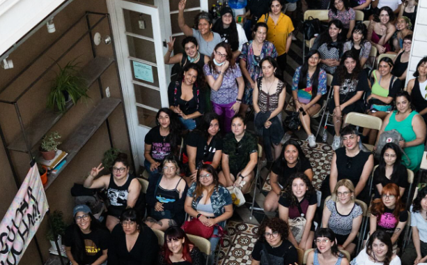

Inicia sesión para acceder a inscripciones de actividades y otros beneficios
¿Quiénes somos?

Disidencia Audiovisual es un colectivo de artistas que busca visibilizar y promover la diversidad sexual y de género a través del arte audiovisual. Nuestro objetivo es crear un espacio seguro y accesible para la creación y difusión de obras que aborden temáticas relacionadas con la disidencia sexual y de género, así como fomentar el diálogo y la reflexión en torno a estas cuestiones.
La idea de un colectivo audiovisual conformado por disidencias sexuales y de género surgen por la falta de oportunidad de diálogo, visibilización y red de apoyo hacia las diversidades de este tipo en el rubro audiovisual. Disidencia Audiovisual busca, en un óptimo probable, surgir como un espacio de resistencia frente a las problemáticas que circundan en mundo audiovisual; Salvaguardar los derechos fundamentales de las disidencias sexuales y de género, y generar conversaciones respecto a las representaciones internas o externas hacia las diversidades.
El colectivo se da inicio en el año 2024, en la ciudad de Santiago de Chile, por un grupo de estudiantes de la carrera de Cine y Televisión de la Universidad de Chile. Desde entonces, hemos trabajado en una variedad de proyectos, incluyendo cortometrajes, documentales y talleres de formación para artistas emergentes. Nuestro enfoque es inclusivo y colaborativo, y buscamos crear un espacio donde todas las voces sean escuchadas y valoradas.
Fotos de nuestras actividades